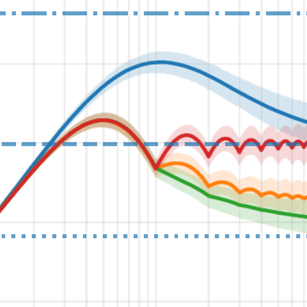
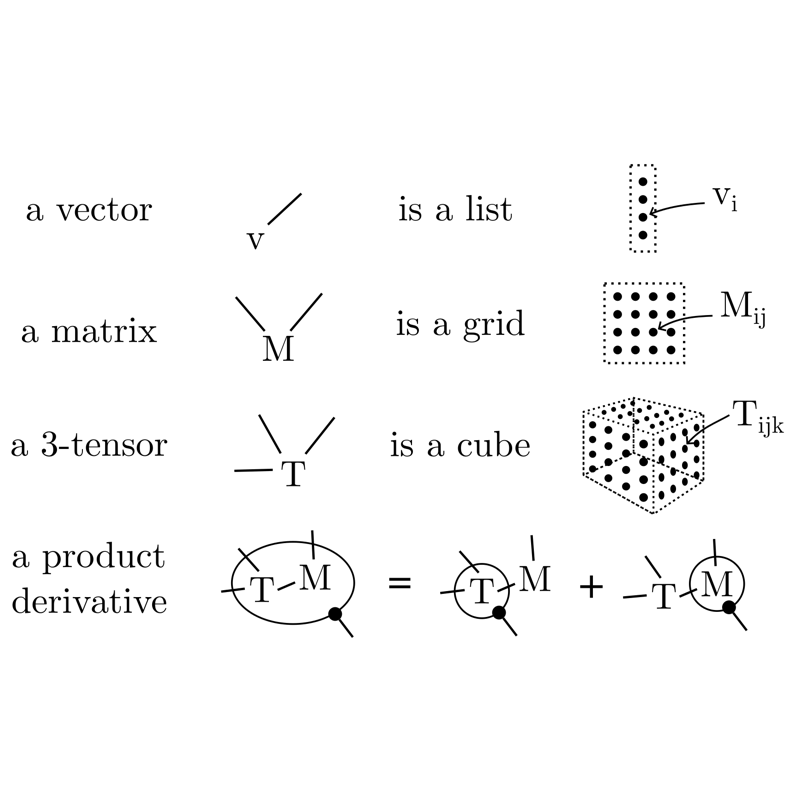
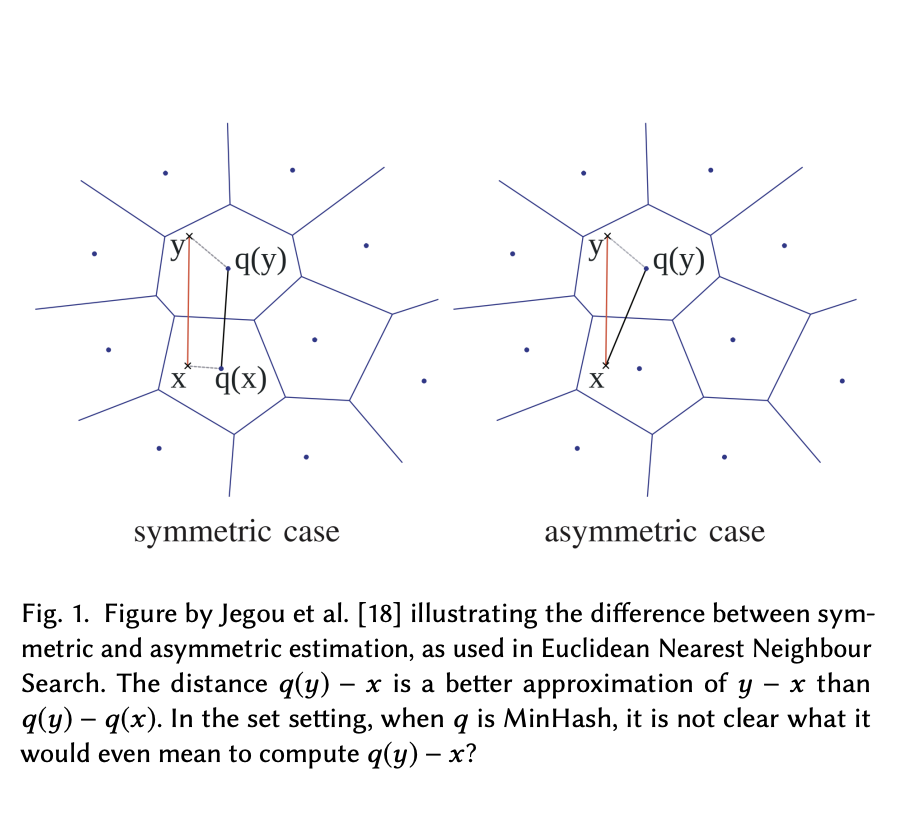

Manuscripts
16 manuscripts, newest first. Click a card to read its abstract.
-
[arxiv] 2026 — NEW! Stochastic Optimization Under Power‑Law Spectra:
Tight Bounds and Shuffling Analysis
Recent work has established that power-law spectral conditions on data enable tight convergence bounds for deterministic gradient descent, resolving the conflict between classical exponential bounds and observed power-law learning curves. In this work, we extend this result to the stochastic regime of high-dimensional machine learning. We provide two main contributions: (1) We generalize the power-law spectral theory to Stochastic Gradient Descent (SGD), showing that the same spectral exponents govern stochastic dynamics; (2) For the fundamental case of isotropic Gaussian data, we provide a precise analysis of data shuffling, deriving exact constants that prove Single Shuffle is strictly superior to Flip-Flop and IID sampling. Our results bridge the gap between abstract spectral theory and practical stochastic training choices, offering a unified picture of how data geometry drives optimization speed.
-
Horner's rule evaluates a monic degree-n polynomial using n−1 multiplications. We show that with rational preprocessing of the coefficients, any such polynomial can be evaluated using only ⌊n/2⌋ + 1 multiplications over fields of characteristic zero or of characteristic p > n. This resolves the multiplication side of a conjecture of Rabin and Winograd (Comm. Pure Appl. Math 1972), who achieved n/2 + 2⌈log2 n⌉ multiplications and conjectured the logarithmic overhead was necessary.
We show that this multiplication count can't be beaten in general, proving that three multiplications do not suffice for degree 6. This strengthens the lower bound of Pan (STOC 1978), who proved a tight bound for general, complex preprocessing.
In characteristic 2, for every n > 1 and every finite field of size at least 2n, we prove that an n-multiplication chain cannot parametrize all value vectors at 2n distinct evaluation points, even with arbitrary preprocessing. We give ⌊n/2⌋ + 1 multiplication schedules over characteristic 2, each with an explicit inverse, for every odd degree n ≤ 25 and conjecture that this is possible for all n.
We also give an injective polynomial construction for universal hashing that uses N multiplications to hash 2N values with a single random key. This improves the best previous construction by Daniel J. Bernstein (cr.yp.to).
-
The primary goal of Design Verification (DV) is to ensure that a proposed chip design implementation (either in code, or physical form) exactly matches its specification and is free of functional errors in order to avoid costly re-designs. Achieving this often demands extensive manual interpretation, translating the specification document into a formal, testable representation. While AI has made progress in DV, current approaches typically focus on narrow, isolated tasks rather than full end-to-end specification compliance of modern chip designs, failing to capture the complexity of real-world verification. Our method automatically formalizes natural language memory chip specifications, for industry relevant Dynamic Random Access Memory (DRAM) standards, into a formal representation called DRAMPyML that can be used for downstream DV tasks like the generation of SystemVerilog assertions, stimulus, and functional coverage. We also release our benchmarking dataset, DRAMBench, which can be used to evaluate the evolution of model capabilities (and new approaches) at hardware autoformalization.
-
Pre-trained language models demonstrate general intelligence and common sense, but long inputs quickly become a bottleneck for memorizing information at inference time. We resurface a simple method, Memorizing Transformers (Wu et al., 2022), that gives the model access to a bank of pre-computed memories. We show that it is possible to fix many of the shortcomings of the original method, such as the need for fine-tuning, by critically assessing how positional encodings should be updated for the keys and values retrieved. This intuitive method uses the model's own key/query system to select and attend to the most relevant memories at each generation step, rather than using external embeddings. We demonstrate the importance of external information being retrieved in a majority of decoder layers, contrary to previous work. We open source a new counterfactual long-range retrieval benchmark, and show that Extended Mind Transformers outperform today's state of the art by 6% on average.
-

Machine learning involves a lot of tensor manipulation, and it's easy to lose track of the larger structure when manipulating high-dimensional data using notation designed for vectors and matrices. Graphical notation, first introduced by Roger Penrose in 1971, reduces the mental overhead and makes the connections “come alive”: each edge is the index of a tensor, and connecting two edges contracts the tensors over this dimension.
The Tensor Cookbook aims to popularize tensor diagrams by rewriting the classical “Matrix Cookbook”. You can think of it as a reference book, skip around for some cool diagrams, or a crash course full of exercises to practice your skill. Its companion, Tensorgrad, is a Python library for symbolic tensor manipulation and derivatives using tensor diagrams.
-
While physics-based computing can offer speed and energy efficiency compared to digital computing, it also is subject to errors that must be mitigated. For example, many error mitigation methods have been proposed for quantum computing. However this error mitigation framework has yet to be applied to other physics-based computing paradigms. In this work, we consider thermodynamic computing, which has recently captured attention due to its relevance to artificial intelligence (AI) applications, such as probabilistic AI and generative AI. A key source of errors in this paradigm is the imprecision of the analog hardware components. Here, we introduce a method that reduces the overall error from a linear to a quadratic dependence (from ε to ε2) on the imprecision ε, for Gaussian sampling and linear algebra applications. The method involves sampling from an ensemble of imprecise distributions associated with various rounding events and then merging these samples. We numerically demonstrate the scalability of this method for dimensions greater than 1000. Finally, we implement this method on an actual thermodynamic computer and show 20% error reduction for matrix inversion; the first thermodynamic error mitigation experiment.
-
We introduce a principled approximate variance propagation framework for Bayesian Neural Networks. More accurate than Monte Carlo sampling, and much faster than previous variance propagation frameworks, it smoothly interpolates between quality and inference time. This is made possible by a new fast algorithm for updating a diagonal-plus-low-rank matrix approximation under various operations.
We tested our algorithm against sampling based MC Dropout and Variational Inference on a number of downstream uncertainty themed tasks, such as calibration and out-of-distribution testing. We find that Favour is as fast as performing 2-3 inference samples, while matching the performance of 10-100 samples.
-
For many applications it is beneficial to sample from a set of vectors with a distribution other than uniform, to increase the amount of information in a sample while still estimating the same expected value. Importance sampling rescales the sampled values by the new probability distribution so that the mean stays fixed, but this only works for sampling a single element, while machine learning applications (and many others) need a “batch” of samples of a fixed size, preferably without repetitions.
In this note we investigate how importance sampling can be made to work in this setting, and we show experimentally that our algorithms lower the variance of samples while keeping the mean unbiased, with an application to survey sampling.
-

Quantization is the state of the art approach to efficiently storing and searching large high-dimensional datasets. Broder’97 introduced the idea of Minwise Hashing (MinHash) for quantizing or sketching large sets or binary strings into a small number of values and provided a way to reconstruct the overlap or Jaccard Similarity between two sets sketched this way.
In this paper, we propose a new estimator for MinHash in the case where the database is quantized, but the query is not. By computing the similarity between a set and a MinHash sketch directly, rather than first also sketching the query, we increase precision and improve recall.
We take a principled approach based on maximum likelihood with strong theoretical guarantees. Experimenal results show an improved recall@10 corresponding to 10-30% extra MinHash values. Finally, we suggest a third very simple estimator, which is as fast as the classical MinHash estimator while often more precise than the MLE.
Our methods concern only the query side of search and can be used with any existing MinHashed database without changes to the data.t
-
The classic way of computing a k-universal hash function is to use a random degree-(k−1) polynomial over a prime field ℤp. For a fast computation of the polynomial, the prime p is often chosen as a Mersenne prime p = 2b−1.
In this paper, we show that there are other nice advantages to using Mersenne primes. Our view is that the output of the hash function is a b-bit integer that is uniformly distributed in [2b], except that p (the all 1s value) is missing. Uniform bit strings have many nice properties, such as splitting into substrings which gives us two or more hash functions for the cost of one, while preserving strong theoretical qualities. We call this trick “Two for one” hashing, and we demonstrate it on 4-universal hashing in the classic Count Sketch algorithm for second moment estimation.
We also provide a new fast branch-free code for division and modulus with Mersenne primes. Contrasting our analytic work, this code generalizes to Pseudo-Mersenne primes p = 2b−c for small c, improving upon a classical algorithm of Crandall.
-
We study five fundamental problems in the field of high dimensional algorithms, similarity search and machine learning. We obtain many new results, including:
• Data structures with Las Vegas guarantees for ℓ1-Approximate Near Neighbours and Braun Blanquet Approximate Set Similarity Search, with performance matching state of the art Monte Carlo algorithms up to factors no(1).
• “Supermajorities”: the first space/time tradeoff for Approximate Set Similarity Search, along with a number of lower bounds suggesting that the algorithms are optimal among all Locality Sensitive Hashing (LSH) data structures.
• The first lower bounds on approximative data structures based on the Orthogonal Vectors Conjecture (OVC).
• Output Sensitive LSH data structures with query time near t + nρ for outputting t distinct elements, where nρ is the state of the art time to output a single element and tnρ was the previous best for t items.
• A Johnson Lindenstrauss embedding with fast multiplication on tensors (a Tensor Sketch), with high probability guarantees for subspace- and near-neighbour-embeddings. -
[arxiv] [pdf] 2019 — Merged into "Oblivious Sketching of High‑Degree Polynomial Kernels" Almost Optimal Tensor SketchWe construct a structured Johnson Lindenstrauss transformation that can be applied to simple tensors on the form x = x(1) ⊗ ... ⊗ x(c) ∈ ℝdᶜ in time nearly c⋅d. That is, exponentially faster than writing out the Kronecker product and then mapping down. These matrices, M, which preserves the norm of any x ∈ ℝdᶜ, such that |‖Mx‖₂ - ‖x‖₂| < ε with probability 1-δ , can be taken to have just Õ(c² ε⁻² (log1/δ)³) rows. This is within c² (log 1/δ)² of optimal for any JL matrix [Larsen & Nelson], and improves upon earlier 'Tensor Sketch' constructions by Pagh and Pham, which used Õ(3ᶜ ε⁻² δ⁻¹) rows, by an exponential amount in both c and δ⁻² . It was shown by Avron, Nguyen and Woodruff that Tensor Sketch is a subspace embedding. This has a large number of applications, such as guaranteeing the correctness of kernel-linear regression performed directly on the reduced vectors. We show that our construction is a subspace embedding too, improving again upon the exponential dependency on c and δ⁻¹ , enabling sketching of much higher order polynomial kernels, such as Taylor approximations to the ubiquitous Gaussian radial basis function. Technically, we construct our matrix M such that M(x ⊗ y) = Tx ∘ T'y where ∘ is the Hadamard (element-wise) product and T and T' support fast matrix-vector multiplication ala [Ailon Chazelle]. To analyze the behavior of Mx on non-simple x , we show a higher order version of Khintchine's inequality, related to the higher order Gaussian chaos analysis by Latała. Finally we show that such sketches can be combined recursively, in a way that doesn't increase the dependency on c by much.
-
We show a reduction from verifying that an LSF family `covers` the sphere, in the sense of Las Vegas LSF, to 3-sat.
-
We consider efficient combinatorial constructions, that allow us to partly derandomize data-structures using the locality sensitive framework of Indyk and Motwani (FOCS '98). In particular our constructions allow us to make Zero-Error Probabilistic Polynomial Time (ZPP) analogues of two state of the art algorithms for `Approximate Set Similarity': This data-structure problem deals with storing a collection X of sets such that given a query set q for which there exists x ∈ P with |q ∩ x|/|q ∪ x| >= s_1 , the data structures return x'∈ P with |q ∩ x'|/|q ∪ x'|\ge s_2 . The first algorithm by Broder et al.introduced the famous `minhash' function, which in the locality sensitive framework yields an n^{ρ_b} time, n^{1+ρ_b} space data structure for ρ_b=(log1/s_1)/(log1/s_2) . The second by Christiani et al.~ gives an n^{ρ_c} time n^{1+ρ_c} space data-structure for ρ_c=(\log2s_1/(1+s_1))/(\log2s_2/(1+s_2)) . Both algorithms use Monte Carlo randomization, but we show that this is not necessary, at least up to n^{o(1)} factors. This settles an open problem from Arasu et al and Pagh asking whether locality sensitive data-structures could be made _exact_ or _without false negatives_ other than for hamming distance, and whether a performance gap was needed in the exponent. The main approach in the thesis is to replace the `locality sensitive hash functions' or `space partitions' with `combinatorial design'. We show that many such designs can be constructed efficiently with the `multi-splitters' introduced by Alon et al. We further show that careful constructions of such designs can be efficiently decoded. We also investigate upper and lower bounds on combinatorial analogues of the minhash algorithm. This is related to the existence of small, approximate minwise hashing families under l_∞ distance.
-
In the field of Computer Science, the Chernoff bound is an extremely useful found bounding the error probabilities of various algorithms. Chernoff gives an exponentially decaying upper bound on the probability that a sum of independent random variables is many standard deviations away from its expectation. However sometimes we need more than an upper bound, and we need bounds that are tight within a constant factor or better. (There is a fairly standard tail lower bound, but it deviates from Chernoff by a factor of $\sqrt n$.) In this project I will explore and derive multiple upper and lower bounds for Chernoff using methods ranging from geometric series and generating functions to saddlepoint approximations and laplace approximation. All these results will be known, but they don’t seem have a good exposition in Computer Science. The reason also to consider more simple methods is to help an intuition for deriving similar bounds for different problems. In particular I will derive a tight bound for the size of the intersection between two hamming balls, which does not seem to exist in the literature. I will use the formulas to answer whether algorithms exists for the following problems: Locality Sensitive Filters in hamming space with limited use of random bits (as opposed to current methods, requiring gaussian samples), LSF with improved performance for low dimensional spaces. (dimension < 2 log n) Linear space bit sampling LSH, which I have previously partially analyzed, but only in a different context, in which a full analysis was not necessary.
-
[github] [pdf] 2013 — Bachelor thesis Donkeys to Monoids: A Computational Framework for Dynamic Semantics
In this paper I build a fully automatic system for translation of natural language into formal logic. I combine a variety of tools and theories to target standard issues such as anaphora resolution, sentence polarity etc. In particular I base my framework on dynamic logics in form of Dynamic Predicate Logic and a set of enhancements by Albert Visser (1999).
`Donkey Monoids', as I will call these monoidal DPL variants, are part of a movement in linguistics towards logics that can more naturally approximate human language in aspects such as polarity and scope. Indeed their name derives from the famous `Donkey Sentence' by Geach (1962) which exhibit these issues so well.
Visser didn't test his ideas computationally and neither did most people involved with DPL. In fact most of the classical literature on logification of natural language exhibits this `problem': Not testing computationally makes it easy to miss obvious details. With the present paper I supply such an experiment.
I build a rewriting system with a well defined set rules, discussing possible semantics. I apply the framework to a large collection of sentences, showing the conversion process step by step. Finally I discuss ways to enlarge the supported fragment of English, how we can combat and interpret the inherent ambiguity we meet, and how the flexibility of Donkey Monoids relate to the classical Montague lambda structures.